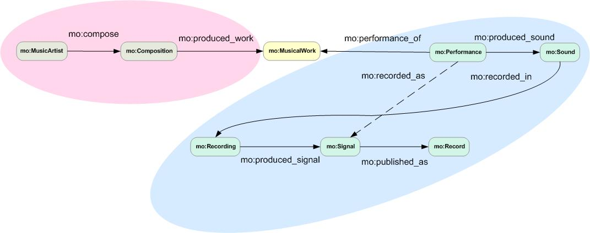

Music Ontology Specification
Specification Document - 28 November 2010
Copyright © 2006-2010 the authors above |
|

 This work is licensed under a Creative Commons
License. This copyright applies to the Music Ontology Specification
and accompanying documentation and does not apply to Music Ontology data formats,
ontology terms, or technology. Regarding underlying technology, Music Ontology
relies heavily on W3C's RDF
technology, an open Web standard
that can be freely used by anyone.
This work is licensed under a Creative Commons
License. This copyright applies to the Music Ontology Specification
and accompanying documentation and does not apply to Music Ontology data formats,
ontology terms, or technology. Regarding underlying technology, Music Ontology
relies heavily on W3C's RDF
technology, an open Web standard
that can be freely used by anyone.
This visual layout and structure of the specification was adapted from the FOAF Vocabulary Specification by Dan Brickley and Libby Miller and the SIOC Ontology Specification by Uldis Bojars and John G. Breslin. This document was automatically generated using the OntoSpec script.
Abstract
The Music Ontology Specification provides main concepts and properties fo describing music (i.e. artists, albums, tracks, but also performances, arrangements, etc.) on the Semantic Web. This document contains a detailed description of the Music Ontology.
Status of This Document
NOTE: This section describes the status of this document at the time of its publication. Other documents may supersede this document.
This specification is an evolving document. This document is generated by a machine-readable Music Ontology expressed in RDF/XML with a specification template.
Authors welcome suggestions on the Music Ontology and this document. This document may be updated or added to based on implementation experience, but no commitment is made by the authors regarding future updates.
Table of Contents
- Introduction
- Music Ontology At A Glance
- Music Ontology Overview
- Background
- The Music Ontology Description
- Music Ontology cross-reference: Classes, Properties and Individuals
- Other ontologies use by the music Ontology cross-reference: Classes, Properties and Individuals
- Ontology namespaces referenced
- References
- Change Log
Introduction
Internet changed the music industry. At first, sharing systems like Napster allowed people to share any song they had on their computer with millions other people. That new reality changed the music industry’s landscape for good, and many juridical battles followed. However, a biggest change followed a couple of years later. Communities like MySpace started to appear. Strong of millions of regular users, such communities helped garage bands and obscure musicians to create their musical niche: the longtail of the music industry. This second change is more profound than the first one: now any musician has the possibility to reach their audience by sharing their work on the Web. In the mean time, a free database called MusicBrainz archiving million of between artists, albums and tracks appeared; music suggesting services like Pandora or Last.FM started to appear and Apple started to sell individual tracks at 1$ with iTunes.
At that point, the music industry of the eighties leaded by blockbusters was completely changed.
The Music Ontology is an attempt to provide a vocabulary for linking a wide range music-related information, and to provide a democratic mechanism for doing so. Anybody can publish Music Ontology data and link it with existing data, in order to help create a music-related web of data. For example, John Doe may publish some information about a performance he saw last night (like the fact that he was there, and a review). Mary Doe may publish the fact that she attended the same performance, that she recorded it using her cell-phone, and that the corresponding item is available in her podcast. The Music Ontology provides a vocabulary to express information ranging from this example to:
In this performance was interpreted a particular arrangement of the Trout Quintet by Franz Schubert.
This work was performed ten times, but only two of these performances were recorded.
Ten takes of this particular track have been recorded, each of which with a particular microphone location.
"Come as You Are" by Nirvana was released on a single and the "Nevermind" album.
During this gig, the band played ten songs. During the last one (a cover of "Eight days a week"), the drummer from the support band joined them to play with them.
The Music Ontology is divided in three levels of expressiveness - from the simplest one to the more complex one. Everything is clustered around the following categories:
- Level 1: aims at providing a vocabulary for simple editorial information (tracks/artists/releases, etc.)
- Level 2: aims at providing a vocabulary for expressing the music creation workflow (composition, arrangement, performance, recording, etc.)
- Level 3: aims at providing a vocabulary for complex event decomposition, to express, for example, what happened during a particular performance, what is the melody line of a particular work, etc.
Terminology and Notation
The keywords "MUST", "MUST NOT", "REQUIRED", "SHALL", "SHALL NOT", "SHOULD", "SHOULD NOT", "RECOMMENDED", "MAY", and "OPTIONAL" in this document are to be interpreted as described in RFC 2119 [RFC 2119].
Namespace URIs of the general form "http://www.example.com/." represents some application-dependent or context-dependent URI as defined in RFC 2396 [RFC 2396].
The XML Namespace URI that MUST be used by implementations of this specification is:
Music Ontology At A Glance
An alphabetical index of Music Ontology terms, by class (categories or types), by property and by individuals. All the terms are hyperlinked to their detailed description for quick reference.
Classes: | AnalogSignal | Arrangement | AudioFile | CD | Composition | CorporateBody | DAT | DCC | DVDA | DigitalSignal | ED2K | Festival | Genre | Instrument | Instrumentation | Label | Libretto | Lyrics | MD | MagneticTape | Medium | Membership | Movement | MusicArtist | MusicGroup | MusicalExpression | MusicalItem | MusicalManifestation | MusicalWork | Orchestration | Performance | PublishedLibretto | PublishedLyrics | PublishedScore | Record | Recording | RecordingSession | Release | ReleaseEvent | ReleaseStatus | ReleaseType | SACD | Score | Show | Signal | SignalGroup | SoloMusicArtist | Sound | Stream | Torrent | Track | Transcription | Vinyl |
Properties: | activity_end | activity_start | amazon_asin | arranged_in | arrangement_of | available_as | biography | bitsPerSample | bpm | catalogue_number | channels | collaborated_with | compilation_of | compiled | compiler | composed_in | composer | conducted | conductor | contains_sample_from | derived_from | discography | discogs | djmix_of | djmixed | djmixed_by | download | ean | encodes | encoding | engineer | engineered | event_homepage | exchange_item | fanpage | free_download | genre | grid | group | gtin | headliner | homepage | image | imdb | instrument | interpreter | ipi | ismn | isrc | iswc | item | key | label | lc | licence | listened | listener | lyrics | mailorder | mashup_of | media_type | medley_of | member | member_of | membership | meter | movement | movement_number | musicbrainz | musicbrainz_guid | musicmoz | myspace | olga | onlinecommunity | opus | origin | other_release_of | paid_download | performance_of | performed | performed_in | performer | possess_item | preview | preview_download | primary_instrument | produced | produced_score | produced_signal | produced_signal_group | produced_sound | produced_work | producer | publication_of | published | published_as | publisher | publishing_location | puid | record | record_count | record_number | record_side | recorded_as | recorded_in | recording_of | records | release | release_status | release_type | remaster_of | remix_of | remixed | remixer | review | sample_rate | sampled | sampled_version | sampled_version_of | sampler | sell_item | signal | similar_to | singer | supporting_musician | tempo | text | time | track | track_count | track_number | translation_of | tribute_to | trmid | upc | want_item | wikipedia |
Individuals: | album | audiobook | bootleg | compilation | ep | interview | live | official | promotion | remix | single | soundtrack | spokenword |
Music Ontology Overview
The Music Ontology definitions presented here are written using a computer language (RDF/OWL) that makes it easy for software to process some basic facts about the terms in the Music Ontology, and consequently about the things described in Music Ontology documents. A Music Ontology document, unlike a traditional Web page, can be combined with other Music Ontology documents to create a unified database of information
MO Basics
MO Record Types
MO Release
MO Performance
Relationships
MO Signal
Relationships
MO Musical Work
Relationships
MO Musical Item
Trading Relationships
MO Record
Relationships
MO Arrangement
Relationships
MO Musical Expression/
Manifestation
Relationships
MO Musical Manifestation /
Musical Item
Relationships
MO Publication
Relationships
MO Other Versions
Relationships
MO workflow properties
MO Production
Relationships
MO Musical Association
Relationships
MO Affiliate
Relationships
MO Get Music
Relationships
MO Music Communities
Relationships
MO Show/Festival
Relationships
Music Ontology Classes Hierarchy
There are the schemes of the hierarchy of the Music Ontology classes. These schemes show the interaction between the Music Ontology classes and other ontologies classes.
RDF Document Examples
Examples of SPARQL queries against these RDF graphs
Background
The Music Ontology is an online community effort to express music-related information on the Semantic Web.
The Music Ontology is mainly influenced by:
- The FRBR Final Report
- The Event ontology
- The Timeline ontology
- The ABC ontology from the Harmony project
- The FOAF Project
More detailed are available on the Wiki publication page.
The Music Ontology Description
This specification serves as the Music Ontology "namespace document". As such it describes the Music Ontology and the terms (RDF classes and properties) that constitute it, so that Semantic Web applications can use those terms in a variety of RDF-compatible document formats and applications.
This document presents the Music Ontology as a Semantic Web vocabulary or Ontology. The Music Ontology is straightforward, pragmatic and designed to allow simultaneous deployment and extension, and is therefore intended for widescale use.
Evolution and Extension of the Music Ontology
The Music Ontology is identified by the namespace URI 'http://purl.org/ontology/mo/'.Revisions and extensions of Music Ontology are conducted through edits to the namespace document, which by convention is published in the Web at the namespace URI.
The properties and types defined here provide some basic concepts for use in Music Ontology descriptions. Other vocabularies (e.g. the Dublin Core metadata elements for simple bibliographic description, FOAF, etc.) can also be mixed in with the Music Ontology terms, as can local extensions. The Music Ontology is designed to be extended, and modules may be added at a later date.
Music Ontology Modules
Music Ontology modules may be used to extend the ontology and avoid making the base ontology too complex. A list of available modules is available on the Wiki.
Time, TimeLine and Event
The parts of the Music Ontology related to the production process of a particular piece of music (composition, performance, arrangement,...) as well as the parts dealing with time-related information are based on three external ontologies. The Music Ontology provides RDFS wrappers for the main classes, properties and individuals of these three ontologies.
The first ontology is: OWL-Time. Three terms of this ontology are used by the Music Ontology: TemporalThing, Instant and Interval.
However the kind of temporal information we may want to express goes a bit beyond OWL-Time, so we use an extension of it, developped in the Centre for Digital Music, Queen Mary, University of London: the TimeLine ontology. Indeed, we may want to express instants and intervals on multiple "timelines" (a timeline being a coherent backbone for temporal things): the one backing a particular audio file, the one behind an audio/video stream, or the physical one, backing a musical performance. Two classes of timelines are defined: PhysicalTimeLine (an instance of it being universaltimeline, which is the one on which we may address "the 13th of october, 2006"), and RelativeTimeLine (instances of this class may back audio signals, and we may address things such as "between 2 and 3 seconds" on them).
There is only one way of addressing temporal things per class of timeline. On a physical time line, a point is identified by a xsd:dateTime -- through the beginsAtDateTime property, and a duration by a xsd:duration -- through the durationXSD property. On a relative time line, a point P is identified by the duration of the interval [0,P], and this duration is identified by a xsd:duration -- through the beginsAtDuration property. A duration is identified by durationXSD.
In order to express knowledge about the production process of a piece of music, we use the Event ontology, also developped at the Centre for Digital Music. Events are seen as a way to arbitrary classify a space/time region. We have the possibiliy to attach to these events: agents (active participants to the event, like a performer, a sound engineer, ...), factors (passive things having a role in the event, like a musical instrument, a musical score, ...) and products (things produced by the event, such as a sound, a musical work, ...). A key feature of this ontology is also to allow "splitting" of events, through the sub_event transitive property. Using events, we may express: this musician was playing this instrument at this given time.
In the current version of the Music Ontology, the main sub-classes of Event are: Performance, Recording, Arrangement, Composition. However, given its abstract definition, we can describe lots of other things using this class: results of feature extraction, beat tracking, segmentation of songs...
Music Creation Workflow
In order to describe music-related events, we consider describing the
workflow beginning with the creation of a musical work to
its release on a particular record. This is our main description
paradigm, and was first used in the music production ontology
developed at C4DM.
In the "easy" case (non-electronic music), We can describe this
workflow within two boundaries: the simplest one and the most expressive one.
The simplest one consider the existence of 4 concepts within this workflow:
MusicalWork (the musical work itself), Performance (the event
corresponding to an actual performance
of the work), Signal (recording the performance as a signal),
and MusicalManifestation
(the release of this signal on a particular record).
The most expressive one consider the existence of 7 concepts:
Composition (the event leading to the creation of a musical work),
MusicalWork, Performance, Sound (the physical sound
produced by the performance), Recording (the event representing the
transduction from a physical sound to a signal, through
the use of a microphone), Signal, and MusicalManifestation.
Thus, we could imagine other ontologies plugged on top of MO, in order to represent the cognition of a sound (related to Sound), the different types of microphones that can be used (related to Recording), and so on.
In order to switch from the simplest workflow to the most expressive one, we define a single shortcut property: recorded_as, directly linking a Performance to a Signal. This property MUST be present in every case, in order to be able to do a simple query for accessing simple information.

The Music Ontology and Standards
It is important to understand that the Music Ontology as specified in this document is not a standard in the sense of ISO Standardisation, or that associated with W3C Process.
The Music Ontology depends heavily on W3C's standards work, specifically on XML, XML Namespaces, RDF, and OWL. All the Music Ontology documents must be well-formed RDF/XML documents.
This specification contributes an ontology, the "Music Ontology ", to the Semantic Web, specifying it using W3C's Resource Description Framework (RDF). As such, the Music Ontology adopts by reference both a syntax (using XML), a data model (RDF graphs) and a mathematically grounded definition for the rules that underpin the RDF design.
The Music Ontology and RDF
Why does the Music Ontology use RDF?
The Music Ontology is an application of the Resource Description Framework (RDF) because the subject area we're describing – music: artists, albums and tracks -- has so many competing requirements that a standalone format would not capture them or would lead to trying to describe these requirements in a number of incompatible formats. By using RDF, the Music Ontology gains a powerful extensibility mechanism, allowing Music-Ontology-based descriptions to be mixed with claims made in any other RDF vocabulary.
This is for that reason that the RDF document examples at the beginning of this document suggested to use the FOAF ontology to describe the Person, and its relations with other Person (artist or non-artist), and to use the Music Ontology to specify that that Person is also an Artist. That way, we can re-use other ontologies such as the Relationship ontology, in conjunction with the FOAF ontology, to describe different relationship between Artists.
The Music Ontology as an ontology cannot incorporate everything we might want to talk about that is related to music: artists (people), albums and tracks. Instead of covering all topics within the Music Ontology itself, we describe the basic topics and build into a larger framework - RDF - that allows us to take advantage of work elsewhere on more specific description vocabularies.
RDF provides the Music Ontology with a way to mix together different descriptive vocabularies in a consistent way. Vocabularies can be created by different communities and groups as appropriate and mixed together as required, without needing any centralized agreement on how terms from different vocabularies can be written down in XML or N3.
Check the Ontology namespaces referenced section to find some ontologies that ca be use in conjonction with the Music Ontology.
This mixing happens in two ways: firstly, RDF provides an underlying model of (typed) objects and their attributes or relationships. mo:Album is an example of a type of object (a "class"), while mo:compilation_of and mo:has_track are examples of a relationship and an attribute of an mo:Album; in RDF we call these "properties". Any vocabulary described in RDF shares this basic model, which is discernable in the syntax for RDF, and which removes one level of confusion in understanding a given vocabulary, making it simpler to comprehend and therefore reuse a vocabulary that you have not written yourself. This is the minimal self-documentation that RDF gives you.
Secondly, there are mechanisms for saying which RDF properties are connected to which classes, and how different classes are related to each other, using RDF Syntax and OWL. These can be quite general (all RDF properties by default come from an rdf:Resource for example) or very specific and precise (for example by using OWL constructs). This is another form of self-documentation, which allows you to connect different vocabularies together as you please.
In summary then, RDF is self-documenting in ways which enable the creation and combination of vocabularies in a devolved manner. This is particularly important for an ontology which describes communities, since online communities connect to many other domains of interest, which it would be impossible (as well as suboptimal) for a single group to describe adequately in non-geological time.
RDF is usually written using the XML or N3 syntaxes. If you want to process the data, you will need to use one of the many RDF toolkits available, such as Jena (Java) or Redland (C).
More information about RDF can be found in the RDF Primer.
The Music Ontology cross-reference: Classes, Properties and Individuals
The Music Ontology introduces the following classes, properties and individuals. See the Music Ontology namespace document in RDF/XML for more detail.
Classes, Properties and Individuals (full detail)
Class: mo:AnalogSignal - stable - level 2
AnalogSignal - An analog signal.| in-range-of: | sampled_version_of |
|---|---|
| in-domain-of: | sampled_version |
| sub-class-of: | Signal |
Class: mo:Arrangement - stable - level 2
Arrangement - An arrangement event.Takes as agent the arranger, and produces a score (informational object, not the actually published score).
| in-range-of: | arranged_in | ||
|---|---|---|---|
| in-domain-of: | genre | produced_score | arrangement_of |
| sub-class-of: | event:Event |
Class: mo:AudioFile - unstable - level 1
AudioFile - An audio file, which may be available on a local file system or through http, ftp, etc.| in-domain-of: | encoding | |
|---|---|---|
| sub-class-of: | foaf:Document | Medium |
Class: mo:CD - unstable - level 1
CD - Compact Disc used as medium to record a musical manifestation.| sub-class-of: | Medium |
|---|
Class: mo:Composition - stable - level 2
Composition - A composition event.Takes as agent the composer himself.
It produces a MusicalWork, or a MusicalExpression (when the initial "product" is a score, for example), or both...
| in-range-of: | composed_in | ||
|---|---|---|---|
| in-domain-of: | genre | produced_work | composer |
| sub-class-of: | event:Event |
Class: mo:CorporateBody - stable - level 1
CorporateBody - Organization or group of individuals and/or other organizations involved in the music market.| in-domain-of: | preview_download | paid_download | mailorder | imdb | free_download | download | discogs |
|---|---|---|---|---|---|---|---|
| sub-class-of: | foaf:Organization |
Class: mo:DAT - unstable - level 1
DAT - Digital Audio Tape used as medium to record a musical manifestation.| sub-class-of: | Medium |
|---|
Class: mo:DCC - unstable - level 1
DCC - Digital Compact Cassette used as medium to record a musical manifestation.| sub-class-of: | Medium |
|---|
Class: mo:DVDA - unstable - level 1
DVDA - DVD-Audio used as medium to record a musical manifestation.| sub-class-of: | Medium |
|---|
Class: mo:DigitalSignal - stable - level 2
DigitalSignal - A digital signal| in-range-of: | sampled_version | ||
|---|---|---|---|
| in-domain-of: | sampled_version_of | sample_rate | bitsPerSample |
| sub-class-of: | Signal |
Class: mo:ED2K - unstable - level 1
ED2K - Something available on the E-Donkey peer-2-peer filesharing network| sub-class-of: | Medium |
|---|
Class: mo:Festival - stable - level 2
Festival - A festival - musical/artistic event lasting several days, like Glastonbury, Rock Am Ring...We migth decompose this event (which is in fact just a classification of the space/time region related to
a particular festival) using hasSubEvent in several performances at different space/time.
| sub-class-of: | event:Event |
|---|
Class: mo:Genre - stable - level 2
Genre - An expressive style of music.Any taxonomy can be plug-in here. You can either define a genre by yourself, like this:
:mygenre a mo:Genre; dc:title "electro rock".
Or you can refer to a DBPedia genre (such as http://dbpedia.org/resource/Baroque_music), allowing semantic web
clients to access easily really detailed structured information about the genre you are refering to.
| in-range-of: | similar_to | genre |
|---|---|---|
| in-domain-of: | wikipedia | similar_to |
Class: mo:Instrument - stable - level 2
Instrument - Any of various devices or contrivances that can be used to produce musical tones or sound.Any taxonomy can be used to subsume this concept. The default one is one extracted by Ivan Herman
from the Musicbrainz instrument taxonomy, conforming to SKOS. This concept holds a seeAlso link
towards this taxonomy.
| in-range-of: | primary_instrument | instrument |
|---|---|---|
| in-domain-of: | wikipedia |
Class: mo:Instrumentation - stable - level 2
Instrumentation - Instrumentation deals with the techniques of writing music for a specific instrument,including the limitations of the instrument, playing techniques and idiomatic handling of the instrument.
| sub-class-of: | Arrangement |
|---|
Class: mo:Label - stable - level 1
Label - Trade name of a company that produces musical works or expression of musical works.| in-range-of: | label | |
|---|---|---|
| in-domain-of: | musicbrainz_guid | lc |
| sub-class-of: | CorporateBody |
Class: mo:Lyrics - stable - level 2
Lyrics - Lyrics| in-range-of: | lyrics |
|---|---|
| in-domain-of: | text |
| sub-class-of: | MusicalExpression |
Class: mo:MD - unstable - level 1
MD - Mini Disc used as medium to record a musical manifestation.| sub-class-of: | Medium |
|---|
Class: mo:MagneticTape - unstable - level 1
MagneticTape - Magnetic analogue tape used as medium to record a musical manifestation.| sub-class-of: | Medium |
|---|
Class: mo:Medium - unstable - level 1
Medium - A means or instrumentality for storing or communicating musical manifestation.| sub-class-of: | MusicalItem |
|---|
Class: mo:Membership - testing - level 1
Membership - A membership event, where one or several people belongs to a group during a particular time period.| in-range-of: | membership | |
|---|---|---|
| in-domain-of: | primary_instrument | group |
| sub-class-of: | event:Event |
Class: mo:Movement - unstable - level 2
Movement - A movement is a self-contained part of a musical work. While individual or selected movements from a composition are sometimes performed separately, a performance of the complete work requires all the movements to be performed in succession.Often a composer attempts to interrelate the movements thematically, or sometimes in more subtle ways, in order that the individual
movements exert a cumulative effect. In some forms, composers sometimes link the movements, or ask for them to be played without a
pause between them.
| in-range-of: | movement |
|---|---|
| in-domain-of: | movement_number |
| sub-class-of: | MusicalWork |
Class: mo:MusicArtist - stable - level 1
MusicArtist - A person or a group of people (or a computer :-) ), whose musicalcreative work shows sensitivity and imagination
| in-range-of: | tribute_to | supporting_musician | interpreter | djmixed_by | compiler | ||||||||||||||||
|---|---|---|---|---|---|---|---|---|---|---|---|---|---|---|---|---|---|---|---|---|---|
| in-domain-of: | paid_download | musicmoz | musicbrainz_guid | mailorder | label | imdb | image | homepage | discogs | supporting_musician | sampled | remixed | origin | ipi | fanpage | djmixed | discography | compiled | biography | activity_start | activity_end |
| sub-class-of: | foaf:Agent |
Class: mo:MusicGroup - stable - level 1
MusicGroup - Group of musicians, or musical ensemble, usually popular or folk, playing parts of or improvising off of a musical arrangement.| in-domain-of: | member | |
|---|---|---|
| sub-class-of: | foaf:Group | MusicArtist |
Class: mo:MusicalExpression - unstable - level 1
MusicalExpression - The intellectual or artistic realization of a work in the form of alpha-numeric, musical, or choreographic notation, sound, etc., or any combination of such forms.For example:
Work #1 Franz Schubert's Trout quintet
* Expression #1 the composer's score
* Expression #2 sound issued from the performance by the Amadeus Quartet and Hephzibah Menuhin on piano
* Expression #3 sound issued from the performance by the Cleveland Quartet and Yo-Yo Ma on the cello
* . . . .
The Music Ontology defines the following sub-concepts of a MusicalExpression, which should be used instead of MusicalExpression itself: Score (the
result of an arrangement), Sound (produced during a performance), Signal. However, it is possible to stick to FRBR and bypass the worflow
mechanism this ontology defines by using the core FRBR properties on such objects. But it is often better to use events to interconnect such
expressions (allowing to go deeply into the production process - `this performer was playing this particular instrument at that
particular time').
| in-range-of: | similar_to | publication_of | ||||||
|---|---|---|---|---|---|---|---|---|
| in-domain-of: | similar_to | musicmoz | imdb | image | homepage | genre | discogs | published_as |
| sub-class-of: | frbr:Expression |
Class: mo:MusicalItem - unstable - level 1
MusicalItem - A single exemplar of a musical expression.For example, it could be a single exemplar of a CD. This is normally an single object (a CD) possessed by somebody.
From the FRBR final report: The entity defined as item is a concrete entity. It is in many instances a single physical object (e.g., a copy of a one-volume monograph, a single audio cassette, etc.). There are instances, however, where the entity defined as item comprises more than one physical object (e.g., a monograph issued as two separately bound volumes, a recording issued on three separate compact discs, etc.).
In terms of intellectual content and physical form, an item exemplifying a manifestation is normally the same as the manifestation itself. However, variations may occur from one item to another, even when the items exemplify the same manifestation, where those variations are the result of actions external to the intent of the producer of the manifestation (e.g., damage occurring after the item was produced, binding performed by a library, etc.).
| in-range-of: | similar_to | preview | item | available_as | |
|---|---|---|---|---|---|
| in-domain-of: | similar_to | image | homepage | genre | encodes |
Class: mo:MusicalManifestation - stable - level 1
MusicalManifestation -This entity is related to the edition/production/publication of a musical expression (musical manifestation are closely related with the music industry (their terms, concepts, definitions, methods (production, publication, etc.), etc.)
From the FRBR final report: The entity defined as manifestation encompasses a wide range of materials, including manuscripts, books, periodicals, maps, posters, sound recordings, films, video recordings, CD-ROMs, multimedia kits, etc. As an entity, manifestation represents all the physical objects that bear the same characteristics, in respect to both intellectual content and physical form.
Work #1 J. S. Bach's Six suites for unaccompanied cello
* Expression #1 sound issued during the performance by Janos Starker recorded in 1963 and 1965
o Manifestation #1 recordings released on 33 1/3 rpm sound discs in 1965 by Mercury
o Manifestation #2 recordings re-released on compact disc in 1991 by Mercury
* Expression #2 sound issued during the performances by Yo-Yo Ma recorded in 1983
o Manifestation #1 recordings released on 33 1/3 rpm sound discs in 1983 by CBS Records
o Manifestation #2 recordings re-released on compact disc in 1992 by CBS Records
Changes that occur deliberately or even inadvertently in the production process that affect the copies result, strictly speaking, in a new manifestation. A manifestation resulting from such a change may be identified as a particular "state" or "issue" of the publication.
Changes that occur to an individual copy after the production process is complete (e.g., the loss of a page, rebinding, etc.) are not considered to result in a new manifestation. That copy is simply considered to be an exemplar (or item) of the manifestation that deviates from the copy as produced.
With the entity defined as manifestation we can describe the physical characteristics of a set of items and the characteristics associated with the production and distribution of that set of items that may be important factors in enabling users to choose a manifestation appropriate to their physical needs and constraints, and to identify and acquire a copy of that manifestation.
Defining manifestation as an entity also enables us to draw relationships between specific manifestations of a work. We can use the relationships between manifestations to identify, for example, the specific publication that was used to create a microreproduction.
Class: mo:MusicalWork - stable - level 2
MusicalWork - Distinct intellectual or artistic musical creation.From the FRBR final report: A work is an abstract entity; there is no single material object one can point to as the work. We recognize the work through individual realizations or expressions of the work, but the work itself exists only in the commonality of
content between and among the various expressions of the work. When we speak of Homer's Iliad as a work, our point of reference is not a particular recitation or text of the work, but the intellectual creation that lies behind all the various expressions of the work.
For example:
work #1 J. S. Bach's The art of the fugue
| in-range-of: | similar_to | performance_of | produced_work | arrangement_of | |||||||||||||||
|---|---|---|---|---|---|---|---|---|---|---|---|---|---|---|---|---|---|---|---|
| in-domain-of: | tempo | similar_to | performed_in | musicmoz | musicbrainz | meter | key | imdb | image | homepage | genre | discogs | bpm | opus | movement | lyrics | iswc | composed_in | arranged_in |
| sub-class-of: | frbr:Work |
Class: mo:Orchestration - stable - level 2
Orchestration - Orchestration includes, in addition to instrumentation, the handling of groups of instruments and their balance and interaction.| sub-class-of: | Arrangement |
|---|
Class: mo:Performance - stable - level 2
Performance - A performance event.It might include as agents performers, engineers, conductors, or even listeners.
It might include as factors a score, a MusicalWork, musical instruments.
It might produce a sound:-)
| in-range-of: | engineered | records | performed_in | performed | listened | conducted | |||||||
|---|---|---|---|---|---|---|---|---|---|---|---|---|---|
| in-domain-of: | tempo | key | genre | engineer | bpm | singer | recorded_as | produced_sound | performer | performance_of | listener | instrument | conductor |
| sub-class-of: | event:Event |
Class: mo:PublishedLibretto - stable - level 2
PublishedLibretto - A published libretto| in-domain-of: | ismn |
|---|---|
| sub-class-of: | MusicalManifestation |
Class: mo:PublishedLyrics - stable - level 2
PublishedLyrics - Published lyrics, as a book or as a text file, for example| in-domain-of: | ismn |
|---|---|
| sub-class-of: | MusicalManifestation |
Class: mo:PublishedScore - stable - level 2
PublishedScore - A published score (subclass of MusicalManifestation)| in-domain-of: | ismn |
|---|---|
| sub-class-of: | MusicalManifestation |
Class: mo:Record - stable - level 1
Record - A published record (manifestation which first aim is to render the product of a recording)| in-range-of: | record | |||
|---|---|---|---|---|
| in-domain-of: | musicbrainz_guid | track_count | track | record_number |
| sub-class-of: | MusicalManifestation |
Class: mo:Recording - stable - level 2
Recording - A recording event.Takes a sound as a factor to produce a signal (analog or digital).
The location of such events (if any) is the actual location of the corresponding
microphone or the "recording device".
| in-range-of: | engineered | recorded_in | ||
|---|---|---|---|---|
| in-domain-of: | genre | engineer | recording_of | produced_signal |
| sub-class-of: | event:Event |
Class: mo:RecordingSession - testing - level 2
RecordingSession - A set of performances/recordings/mastering events. This event can be decomposed in its constituent events using event:sub_event| in-range-of: | engineered | ||
|---|---|---|---|
| in-domain-of: | genre | engineer | produced_signal_group |
| sub-class-of: | event:Event |
Class: mo:Release - testing - level 1
Release - A specific release, with barcode, box, liner notes, cover art, and a number of records| in-range-of: | release | |||||||
|---|---|---|---|---|---|---|---|---|
| in-domain-of: | label | upc | record_count | record | gtin | grid | ean | catalogue_number |
| sub-class-of: | MusicalManifestation |
Class: mo:ReleaseEvent - testing - level 1
ReleaseEvent - A release event, in a particular place (e.g. a country) at a particular time. Other factors of this event might include cover art, liner notes, box, etc. or a release grouping all these.| in-domain-of: | musicbrainz_guid | release |
|---|---|---|
| sub-class-of: | event:Event |
Class: mo:ReleaseStatus - stable - level 1
ReleaseStatus - Musical manifestation release status.| in-range-of: | release_status |
|---|
Class: mo:ReleaseType - stable - level 1
ReleaseType - Release type of a particular manifestation, such as "album" or "interview"...| in-range-of: | release_type |
|---|
Class: mo:SACD - unstable - level 1
SACD - Super Audio Compact Disc used as medium to record a musical manifestation.| sub-class-of: | Medium |
|---|
Class: mo:Score - stable - level 2
Score - Here, we are dealing with the informational object (the MusicalExpression), not the actually "published" score.This may be, for example, the product of an arrangement process.
| in-range-of: | performance_of | produced_score |
|---|---|---|
| in-domain-of: | performed_in | meter |
| sub-class-of: | MusicalExpression |
Class: mo:Show - stable - level 2
Show - A show - a musical event lasting several days, in a particular venue. Examples can be"The Magic Flute" at the Opera Bastille, August 2005, or a musical in the west end...
| sub-class-of: | event:Event |
|---|
Class: mo:Signal - stable - level 1
Signal - A subclass of MusicalExpression, representing a signal, for example a master signal produced by a performance and a recording.| in-range-of: | signal | sampled | remixed | recorded_as | produced_signal | encodes | djmixed | derived_from | compilation_of | ||||||
|---|---|---|---|---|---|---|---|---|---|---|---|---|---|---|---|
| in-domain-of: | tempo | musicbrainz_guid | musicbrainz | key | duration | bpm | trmid | time | records | puid | isrc | interpreter | djmixed_by | derived_from | channels |
| sub-class-of: | MusicalExpression |
Class: mo:SignalGroup - testing - level 1
SignalGroup - A musical expression representing a group of signals, for example a set of masters resulting from a whole recording/mastering session.| in-range-of: | produced_signal_group | |
|---|---|---|
| in-domain-of: | musicbrainz_guid | signal |
| sub-class-of: | MusicalExpression |
Class: mo:SoloMusicArtist - stable - level 1
SoloMusicArtist - Single person whose musical creative work shows sensitivity and imagination.| sub-class-of: | foaf:Person | MusicArtist |
|---|
Class: mo:Sound - stable - level 2
Sound - A subclass of MusicalExpression, representing a sound. Realisation of a MusicalWork during a musical Performance.| in-range-of: | recording_of | produced_sound |
|---|---|---|
| in-domain-of: | recorded_in | |
| sub-class-of: | MusicalExpression | event:Event |
Class: mo:Stream - unstable - level 1
Stream - Transmission over a network used as medium to broadcast a musical manifestation| sub-class-of: | Medium |
|---|
Class: mo:Torrent - unstable - level 1
Torrent - Something available on the Bittorrent peer-2-peer filesharing network| sub-class-of: | Medium |
|---|
Class: mo:Track - stable - level 1
Track - A track on a particular record| in-range-of: | track | ||||
|---|---|---|---|---|---|
| in-domain-of: | musicbrainz_guid | duration | track_number | record_side | olga |
| sub-class-of: | MusicalManifestation |
Class: mo:Transcription - testing - level 2
Transcription - Transcription event| sub-class-of: | event:Event |
|---|
Class: mo:Vinyl - unstable - level 1
Vinyl - Vinyl used as medium to record a musical manifestation| sub-class-of: | Medium |
|---|
Property: mo:activity_end - testing - level 1
activity_end - Relates an artist to a date at which its activity ended| Domain: | MusicArtist |
|---|---|
| Range: | xsd:date |
Property: mo:activity_start - testing - level 1
activity_start - Relates an artist to a date at which its activity started| Domain: | MusicArtist |
|---|---|
| Range: | xsd:date |
Property: mo:amazon_asin - stable - level 1
amazon_asin - Used to link a work or the expression of a work to its corresponding Amazon ASINs page.| Domain: | frbr:Item | frbr:Manifestation | frbr:Expression | frbr:Work |
|---|---|---|---|---|
| Range: | foaf:Document | |||
| Sub-property-of: | foaf:isPrimaryTopicOf |
Property: mo:arranged_in - unstable - level 2
arranged_in - Associates a work to an arrangement event where it was arranged| Domain: | MusicalWork |
|---|---|
| Range: | Arrangement |
| Inverse-of: | mo:arrangement_of |
| Sub-property-of: | event:isFactorOf |
Property: mo:arrangement_of - unstable - level 2
arrangement_of - Associates an arrangement event to a work| Domain: | Arrangement |
|---|---|
| Range: | MusicalWork |
| Inverse-of: | mo:arranged_in |
| Sub-property-of: | event:factor |
Property: mo:available_as - stable - level 1
available_as - Relates a musical manifestation to a musical item (this album, and my particular cd). By usingthis property, there is no assumption on wether the full content is available on the linked item.
To be explicit about this, you can use a sub-property, such as mo:item (the full manifestation
is available on that item) or mo:preview (only a part of the manifestation is available on
that item).
This is a subproperty of frbr:examplar.
| Domain: | MusicalManifestation |
|---|---|
| Range: | MusicalItem |
| Sub-property-of: | frbr:exemplar |
Property: mo:biography - stable - level 1
biography - Used to link an artist to their online biography.| Domain: | MusicArtist |
|---|---|
| Range: | foaf:Document |
| Sub-property-of: | foaf:isPrimaryTopicOf |
Property: mo:bitsPerSample - stable - level 1
bitsPerSample - Associates a digital signal to the number a bits used to encode one sample. Range is xsd:int.| Domain: | DigitalSignal |
|---|---|
| Range: | xsd:int |
Property: mo:bpm - stable - level 2
bpm - Indicates the BPM of a MusicalWork or a particular PerformanceBeats per minute: the pace of music measured by the number of beats occurring in 60 seconds.
| Domain: | Signal | Performance | MusicalWork |
|---|---|---|---|
| Range: | xsd:float |
Property: mo:catalogue_number - testing - level 1
catalogue_number - Links a release with the corresponding catalogue number| Domain: | Release |
|---|---|
| Range: | xsd:string |
| Sub-property-of: | uuid |
Property: mo:channels - stable - level 1
channels - Associates a signal to the number of channels it holds (mono --> 1, stereo --> 2). Range is xsd:int.| Domain: | Signal |
|---|---|
| Range: | xsd:int |
Property: mo:collaborated_with - unstable - level 1
collaborated_with - Used to relate two collaborating people on a work.| Domain: | foaf:Agent |
|---|---|
| Range: | foaf:Agent |
Property: mo:compilation_of - unstable - level 1
compilation_of - Indicates that a musical manifestation is a compilation of several Signals.| Domain: | MusicalManifestation |
|---|---|
| Range: | Signal |
Property: mo:compiled - unstable - level 1
compiled - Used to relate an person or a group of person who compiled the manifestation of a musical work.| Domain: | MusicArtist |
|---|---|
| Range: | MusicalManifestation |
| Inverse-of: | mo:compiler |
Property: mo:compiler - unstable - level 1
compiler - Used to relate the manifestation of a musical work to a person or a group of person who compiled it.| Domain: | MusicalManifestation |
|---|---|
| Range: | MusicArtist |
| Inverse-of: | mo:compiled |
Property: mo:composed_in - unstable - level 2
composed_in - Associates a MusicalWork to the Composition event pertainingto its creation. For example, I might use this property to associate
the Magic Flute to its composition event, occuring during 1782 and having as
a mo:composer Mozart.
| Domain: | MusicalWork |
|---|---|
| Range: | Composition |
| Inverse-of: | mo:produced_work |
| Sub-property-of: | event:producedIn |
Property: mo:composer - stable - level 2
composer - Associates a composition event to the actual composer. For example,this property could link the event corresponding to the composition of the
Magic Flute in 1782 to Mozart himself (who obviously has a FOAF profile:-) ).
| Domain: | Composition |
|---|---|
| Range: | foaf:Agent |
| Sub-property-of: | event:agent |
Property: mo:conducted - unstable - level 2
conducted - Relates agents to the performances they were conducting| Domain: | foaf:Agent |
|---|---|
| Range: | Performance |
| Inverse-of: | mo:conductor |
| Sub-property-of: | event:isAgentIn |
Property: mo:conductor - stable - level 2
conductor - Relates a performance to the conductor involved| Domain: | Performance |
|---|---|
| Range: | foaf:Agent |
| Inverse-of: | mo:conducted |
| Sub-property-of: | event:agent |
Property: mo:contains_sample_from - unstable - level 1
contains_sample_from - Relates a signal to another signal, which has been sampled.| Domain: | |
|---|---|
| Range: | |
| Sub-property-of: | derived_from |
Property: mo:derived_from - testing - level 1
derived_from - A related signal from which the described signal is derived.| Domain: | Signal |
|---|---|
| Range: | Signal |
| Sub-property-of: | dcterms:source |
Property: mo:discography - stable - level 1
discography - Used to links an artist to an online discography of their musical works. The discography should provide a summary of each released musical work of the artist.| Domain: | MusicArtist |
|---|---|
| Range: | foaf:Document |
| Sub-property-of: | foaf:isPrimaryTopicOf |
Property: mo:discogs - stable - level 1
discogs - Used to link a musical work or the expression of a musical work, an artist or a corporate body to to its corresponding Discogs page.| Domain: | CorporateBody | MusicArtist | MusicalManifestation | MusicalExpression | MusicalWork |
|---|---|---|---|---|---|
| Range: | foaf:Document | ||||
| Sub-property-of: | foaf:isPrimaryTopicOf |
Property: mo:djmix_of - unstable - level 1
djmix_of - Indicates that all (or most of) the tracks of a musical work or the expression of a musical work were mixed together from all (or most of) the tracks from another musical work or the expression of a musical work to form a so called DJ-Mix.The tracks might have been altered by pitching (so that the tempo of one track matches the tempo of the following track) and fading (so that one track blends in smoothly with the other). If the tracks have been more substantially altered, the "mo:remix" relationship type is more appropriate.
| Domain: | |
|---|---|
| Range: | |
| Sub-property-of: | derived_from |
Property: mo:djmixed - unstable - level 1
djmixed - Used to relate an artist who djmixed a musical work or the expression of a musical work.The artist usually selected the tracks, chose their sequence, and slightly changed them by fading (so that one track blends in smoothly with the other) or pitching (so that the tempo of one track matches the tempo of the following track). This applies to a 'Mixtape' in which all tracks were DJ-mixed together into one single long track.
| Domain: | MusicArtist |
|---|---|
| Range: | Signal |
| Inverse-of: | mo:djmixed_by |
Property: mo:djmixed_by - unstable - level 1
djmixed_by - Used to relate a work or the expression of a work to an artist who djmixed it.The artist usually selected the tracks, chose their sequence, and slightly changed them by fading (so that one track blends in smoothly with the other) or pitching (so that the tempo of one track matches the tempo of the following track). This applies to a 'Mixtape' in which all tracks were DJ-mixed together into one single long track.
| Domain: | Signal |
|---|---|
| Range: | MusicArtist |
| Inverse-of: | mo:djmixed |
Property: mo:download - stable - level 1
download - This property can be used to link from a person to the website where they make their works available, or froma manifestation (a track or an album, for example) to a web page where it is available for
download.
It is better to use one of the three sub-properties instead of this one in order to specify wether the
content can be accessed for free (mo:freedownload), if it is just free preview material (mo:previewdownload), or
if it can be accessed for some money (mo:paiddownload) (this includes links to the Amazon store, for example).
This property MUST be used only if the content is just available through a web page (holding, for example
a Flash application) - it is better to link to actual content directly through the use of mo:available_as and
mo:Stream, mo:Torrent or mo:ED2K, etc. Therefore, Semantic Web user agents that don't know how to read HTML and even
less to rip streams from Flash applications can still access the audio content.
| Domain: | CorporateBody | foaf:Agent | frbr:Manifestation |
|---|---|---|---|
| Range: | foaf:Document | ||
| Sub-property-of: | foaf:isPrimaryTopicOf |
Property: mo:ean - testing - level 1
ean - The European Article Number (EAN) is a universal identifier for products, commonly printed in form of barcodes on them. The numbers represented by those codes can either be 8 or 13 digits long, with the 13-digit-version being most common. EANs form a superset of the North American Universal Product Code (UPC) as every UPC can be made an EAN by adding a leading zero to it. Additionally every EAN is also a Japanese Article Number (JAN). The identifiers were formerly assigned by EAN International which merged with Uniform Code Council (UCC, the guys behind the UPCs) and Electronic Commerce Council of Canada (ECCC) to become GS1.| Domain: | Release |
|---|---|
| Range: | xsd:string |
| Sub-property-of: | gtin |
Property: mo:encodes - unstable - level 1
encodes - Relates a MusicalItem (a track on a particular CD, an audio file, a stream somewhere) to the signal it encodes.This is usually a lower-resolution version of the master signal (issued from a Recording event).
| Domain: | MusicalItem |
|---|---|
| Range: | Signal |
Property: mo:encoding - unstable - level 1
encoding - Method used to convert analog electronic signals into digital format such as "MP3 CBR @ 128kbps", "OGG @ 160kbps", "FLAC", etc.| Domain: | AudioFile |
|---|---|
| Range: | rdfs:Literal |
Property: mo:engineer - stable - level 2
engineer - Relates a performance or a recording to the engineer involved| Domain: | RecordingSession | Recording | Performance |
|---|---|---|---|
| Range: | foaf:Agent | ||
| Inverse-of: | mo:engineered | ||
| Sub-property-of: | event:agent |
Property: mo:engineered - unstable - level 2
engineered - Relates agents to the performances/recordings they were engineering in| Domain: | foaf:Agent | ||
|---|---|---|---|
| Range: | RecordingSession | Recording | Performance |
| Inverse-of: | mo:engineer | ||
| Sub-property-of: | event:isAgentIn |
Property: mo:event_homepage - stable - level 2
event_homepage - Links a particular event to a web page| Domain: | event:Event |
|---|---|
| Range: | foaf:Document |
| Sub-property-of: | foaf:isPrimaryTopicOf |
Property: mo:exchange_item - stable - level 1
exchange_item - A person, a group of person or an organization exchanging an exemplar of a single manifestation.| Domain: | foaf:Agent |
|---|---|
| Range: | frbr:Item |
Property: mo:fanpage - stable - level 1
fanpage - Used to link an artist to a fan-created webpage devoted to that artist.| Domain: | MusicArtist |
|---|---|
| Range: | foaf:Document |
| Sub-property-of: | foaf:isPrimaryTopicOf |
Property: mo:free_download - stable - level 1
free_download - This property can be used to link from a person to the website where they make their works available, or froma manifestation (a track or an album, for example) to a web page where it is available for free
download.
This property MUST be used only if the content is just available through a web page (holding, for example
a Flash application) - it is better to link to actual content directly through the use of mo:available_as and
mo:Stream, mo:Torrent or mo:ED2K, etc. Therefore, Semantic Web user agents that don't know how to read HTML and even
less to rip streams from Flash applications can still access the audio content.
| Domain: | CorporateBody | foaf:Agent | frbr:Manifestation |
|---|---|---|---|
| Range: | foaf:Document | ||
| Sub-property-of: | foaf:isPrimaryTopicOf | download |
Property: mo:genre - stable - level 2
genre - Associates an event (like a performance or a recording) to a particular musical genre.Further version of this property may also include works and scores in the domain.
| Domain: | MusicalItem | MusicalManifestation | MusicalExpression | MusicalWork | RecordingSession | Recording | Composition | Arrangement | Performance | foaf:Agent |
|---|---|---|---|---|---|---|---|---|---|---|
| Range: | Genre |
Property: mo:grid - testing - level 1
grid - The Global Release Identifier (GRid) is a system for uniquely identifying Releases of music over electronic networks (that is, online stores where you can buy music as digital files). As that it can be seen as the equivalent of the BarCode (or more correctly the GTIN) as found on physical releases of music. Like the ISRC (a code for identifying single recordings as found on releases) it was developed by the IFPI but it does not appear to be a standard of the ISO.| Domain: | Release |
|---|---|
| Range: | xsd:string |
| Sub-property-of: | uuid |
Property: mo:group - testing - level 1
group - Relates a membership event with the corresponding group| Domain: | Membership |
|---|---|
| Range: | foaf:Group |
Property: mo:gtin - testing - level 1
gtin - GTIN is a grouping term for EANs and UPCs. In common speech those are called barcodes although the barcodes are just a representation of those identifying numbers.| Domain: | Release |
|---|---|
| Range: | xsd:string |
Property: mo:headliner - testing - level 2
headliner - Relates a performance to the headliner(s) involved| Domain: | |
|---|---|
| Range: | |
| Sub-property-of: | performer |
Property: mo:homepage - stable - level 1
homepage - Links an artist, a record, etc. to a corresponding web page| Domain: | MusicalItem | MusicalManifestation | MusicalExpression | MusicArtist | MusicalWork |
|---|---|---|---|---|---|
| Range: | foaf:Document | ||||
| Sub-property-of: | foaf:isPrimaryTopicOf |
Property: mo:image - stable - level 1
image - Indicates a pictorial image (JPEG, GIF, PNG, Etc.) of a musical work, the expression of a musical work, the manifestation of a work or the examplar of a manifestation.| Domain: | MusicalItem | MusicalManifestation | MusicalExpression | MusicArtist | MusicalWork |
|---|---|---|---|---|---|
| Range: | foaf:Image | ||||
| Sub-property-of: | foaf:depiction |
Property: mo:imdb - stable - level 1
imdb - Used to link an artist, a musical work or the expression of a musical work to their equivalent page on IMDb, the InternetMovieDatabase.| Domain: | CorporateBody | MusicArtist | MusicalManifestation | MusicalExpression | MusicalWork |
|---|---|---|---|---|---|
| Range: | foaf:Document | ||||
| Sub-property-of: | foaf:isPrimaryTopicOf |
Property: mo:instrument - stable - level 2
instrument - Relates a performance to a musical instrument involved| Domain: | Performance |
|---|---|
| Range: | Instrument |
| Sub-property-of: | event:factor |
Property: mo:interpreter - testing - level 1
interpreter - Adds an involved music artist, who interpreted, remixed, or otherwise modified an existing signal, which resulted in the signal that is here the subject of this relation.| Domain: | Signal |
|---|---|
| Range: | MusicArtist |
Property: mo:ipi - testing - level 1
ipi - The Interested Parties Information Code (IPI) is an ISO standard similar to ISBNs for identifying the people or groups with some involvement with a particular musical work / compositions.| Domain: | MusicArtist |
|---|---|
| Range: | xsd:string |
| Sub-property-of: | uuid |
Property: mo:ismn - testing - level 1
ismn - The International Standard Music Number (ISMN) is an ISO standard similar to ISBNs for identifying printed music publications| Domain: | PublishedScore | PublishedLibretto | PublishedLyrics |
|---|---|---|---|
| Range: | xsd:string | ||
| Sub-property-of: | uuid |
Property: mo:isrc - stable - level 1
isrc - The ISRC (International Standard Recording Code) is the international identification system for sound recordings and music videorecordings.Each ISRC is a unique and permanent identifier for a specific recording which can be permanently encoded into a product as its digital fingerprint.
Encoded ISRC provide the means to automatically identify recordings for royalty payments.
| Domain: | Signal |
|---|---|
| Range: | xsd:string |
| Sub-property-of: | uuid |
Property: mo:iswc - testing - level 1
iswc - Links a musical work to the corresponding ISWC number| Domain: | MusicalWork |
|---|---|
| Range: | xsd:string |
| Sub-property-of: | uuid |
Property: mo:item - testing - level 1
item - Relates a musical manifestation to a musical item (this album, and my particular cd) holding theentire manifestation, and not just a part of it.
| Domain: | MusicalManifestation |
|---|---|
| Range: | MusicalItem |
| Sub-property-of: | available_as |
Property: mo:key - stable - level 2
key - Indicated the key used by the musicians during a performance, or the key of a MusicalWork.Any of 24 major or minor diatonic scales that provide the tonal framework for a piece of music.
| Domain: | Signal | Performance | MusicalWork |
|---|---|---|---|
| Range: |
Property: mo:label - testing - level 1
label - Associates a release event with the label releasing the record| Domain: | MusicArtist | Release |
|---|---|---|
| Range: | Label |
Property: mo:lc - testing - level 1
lc - The Label Code (LC) was introduced in 1977 by the IFPI (International Federation of Phonogram and Videogram Industries) in order to unmistakably identify the different record labels (see Introduction, Record labels) for rights purposes. The Label Code consists historically of 4 figures, presently being extended to 5 figures, preceded by LC and a dash (e.g. LC-0193 = Electrola; LC-0233 = His Master's Voice). Note that the number of countries using the LC is limited, and that the code given on the item is not always accurate.| Domain: | Label |
|---|---|
| Range: | xsd:string |
| Sub-property-of: | uuid |
Property: mo:licence - stable - level 1
licence - Used to link a work or the expression of a work to the license under which they can be manipulated (downloaded, modified, etc).This is usually used to link to a Creative Commons licence.
| Domain: | frbr:Manifestation | frbr:Expression | frbr:Work |
|---|---|---|---|
| Range: |
Property: mo:listened - unstable - level 2
listened - Relates agents to the performances they were listening in| Domain: | foaf:Agent |
|---|---|
| Range: | Performance |
| Inverse-of: | mo:listener |
| Sub-property-of: | event:isAgentIn |
Property: mo:listener - stable - level 2
listener - Relates a performance to the listener involved| Domain: | Performance |
|---|---|
| Range: | foaf:Agent |
| Inverse-of: | mo:listened |
| Sub-property-of: | event:agent |
Property: mo:lyrics - testing - level 2
lyrics - Associates lyrics with a musical work| Domain: | MusicalWork |
|---|---|
| Range: | Lyrics |
Property: mo:mailorder - stable - level 1
mailorder - Used to link a musical work or the expression of a musical work to a website where people can buy a copy of the musical manifestation.| Domain: | CorporateBody | MusicArtist | frbr:Manifestation |
|---|---|---|---|
| Range: | foaf:Document | ||
| Sub-property-of: | foaf:isPrimaryTopicOf |
Property: mo:mashup_of - unstable - level 1
mashup_of - Indicates that musical works or the expressions of a musical work were mashed up on this album or track.This means that two musical works or the expressions of a musical work by different artists are mixed together, over each other, or otherwise combined into a single musical work (usually by a third artist, the remixer).
| Domain: | |
|---|---|
| Range: | |
| Sub-property-of: | derived_from |
Property: mo:media_type - testing - level 1
media_type - The mediatype (file format or MIME type, or physical medium) of a musical manifestation, e.g. a MP3, CD or vinyl.| Domain: | MusicalManifestation |
|---|---|
| Range: | dcterms:MediaType |
| Sub-property-of: | dcterms:format |
Property: mo:medley_of - unstable - level 1
medley_of - Indicates that a musical expression is a medley of several other musical expressions.This means that the orignial musical expression were rearranged to create a new musical expression in the form of a medley.
| Domain: | |
|---|---|
| Range: | |
| Sub-property-of: | derived_from |
Property: mo:member - stable - level 1
member - Indicates a member of a musical group| Domain: | MusicGroup |
|---|---|
| Range: | foaf:Agent |
| Sub-property-of: | foaf:member |
Property: mo:member_of - unstable - level 1
member_of - Inverse of the foaf:member property| Domain: | foaf:Agent |
|---|---|
| Range: | foaf:Group |
| Inverse-of: | foaf:member |
Property: mo:membership - testing - level 1
membership - Relates an agent with related membership events| Domain: | foaf:Agent |
|---|---|
| Range: | Membership |
Property: mo:meter - testing - level 2
meter - Associates a musical work or a score with its meter| Domain: | Score | MusicalWork |
|---|---|---|
| Range: |
Property: mo:movement - unstable - level 2
movement - Indicates that a musical work has movements| Domain: | MusicalWork |
|---|---|
| Range: | Movement |
Property: mo:movement_number - unstable - level 2
movement_number - Indicates the position of a movement in a musical work.| Domain: | Movement |
|---|---|
| Range: | xsd:int |
Property: mo:musicbrainz - stable - level 1
musicbrainz - Linking an agent, a track or a record to its corresponding Musicbrainz page.| Domain: | Signal | foaf:Agent | MusicalManifestation | MusicalWork |
|---|---|---|---|---|
| Range: | foaf:Document | |||
| Sub-property-of: | foaf:isPrimaryTopicOf |
Property: mo:musicbrainz_guid - testing - level 1
musicbrainz_guid - Links an object to the corresponding Musicbrainz identifier| Domain: | Label | ReleaseEvent | Signal | SignalGroup | Record | Track | MusicArtist |
|---|---|---|---|---|---|---|---|
| Range: | |||||||
| Sub-property-of: | uuid |
Property: mo:musicmoz - stable - level 1
musicmoz - Used to link an artist, a musical work or the expression of a musical work to its corresponding MusicMoz page.| Domain: | MusicalManifestation | MusicalExpression | MusicalWork | MusicArtist |
|---|---|---|---|---|
| Range: | foaf:Document | |||
| Sub-property-of: | foaf:isPrimaryTopicOf |
Property: mo:myspace - stable - level 1
myspace - Used to link a person to its corresponding MySpace page.| Domain: | foaf:Agent |
|---|---|
| Range: | foaf:Document |
| Sub-property-of: | foaf:isPrimaryTopicOf |
Property: mo:olga - stable - level 1
olga - Used to link a track to a tabulature file for track in the On-Line Guitar Archive.| Domain: | Track |
|---|---|
| Range: | foaf:Document |
| Sub-property-of: | foaf:isPrimaryTopicOf |
Property: mo:onlinecommunity - stable - level 1
onlinecommunity - Used to link a person with an online community web page like a blog, a wiki, a forum, a livejournal page, Etc.| Domain: | foaf:Agent |
|---|---|
| Range: | foaf:Document |
| Sub-property-of: | foaf:isPrimaryTopicOf |
Property: mo:opus - stable - level 2
opus - Used to define a creative work, especially a musical composition numbered to designate the order of a composer's works.| Domain: | MusicalWork |
|---|---|
| Range: | rdfs:Literal |
Property: mo:origin - testing - level 1
origin - Relates an artist to its geographic origin| Domain: | MusicArtist |
|---|---|
| Range: | geo:SpatialThing |
Property: mo:other_release_of - unstable - level 1
other_release_of - Indicates that two musical manifestations are essentially the same.| Domain: | MusicalManifestation |
|---|---|
| Range: | MusicalManifestation |
Property: mo:paid_download - stable - level 1
paid_download - Provide a link from an artist to a web page where all of that artist's musical work is available for some money,or a link from a manifestation (record/track, for example) to a web page providing a paid access to this manifestation.
| Domain: | CorporateBody | MusicArtist | frbr:Manifestation |
|---|---|---|---|
| Range: | foaf:Document | ||
| Sub-property-of: | foaf:isPrimaryTopicOf | download |
Property: mo:performance_of - unstable - level 2
performance_of - Associates a Performance to a musical work or an arrangement that is being used as a factor in it.For example, I might use this property to attach the Magic Flute musical work to
a particular Performance.
| Domain: | Performance | |
|---|---|---|
| Range: | MusicalWork | Score |
| Inverse-of: | mo:performed_in | |
| Sub-property-of: | event:factor |
Property: mo:performed - unstable - level 2
performed - Relates agents to the performances they were performing in| Domain: | foaf:Agent |
|---|---|
| Range: | Performance |
| Inverse-of: | mo:performer |
| Sub-property-of: | event:isAgentIn |
Property: mo:performed_in - unstable - level 2
performed_in - Associates a Musical Work or an Score to Performances in which they werea factor. For example, I might use this property in order to
associate the Magic Flute to a particular performance at the Opera
Bastille last year.
| Domain: | MusicalWork | Score |
|---|---|---|
| Range: | Performance | |
| Inverse-of: | mo:performance_of | |
| Sub-property-of: | event:isFactorOf |
Property: mo:performer - stable - level 2
performer - Relates a performance to the performers involved| Domain: | Performance |
|---|---|
| Range: | foaf:Agent |
| Inverse-of: | mo:performed |
| Sub-property-of: | event:agent |
Property: mo:possess_item - stable - level 1
possess_item - A person, a group of person or an organization possessing an exemplar of a single manifestation.| Domain: | foaf:Agent |
|---|---|
| Range: | frbr:Item |
Property: mo:preview - testing - level 1
preview - Relates a musical manifestation to a musical item (this album, and my particular cd), which holdsa preview of the manifestation (eg. one track for an album, or a snippet for a track)
| Domain: | MusicalManifestation |
|---|---|
| Range: | MusicalItem |
| Sub-property-of: | available_as |
Property: mo:preview_download - stable - level 1
preview_download - This property can be used to link from a person to the website where they make previews of their works available, or froma manifestation (a track or an album, for example) to a web page where a preview download is available.
This property MUST be used only if the content is just available through a web page (holding, for example
a Flash application) - it is better to link to actual content directly through the use of mo:available_as and
mo:Stream, mo:Torrent or mo:ED2K, etc. Therefore, Semantic Web user agents that don't know how to read HTML and even
less to rip streams from Flash applications can still access the audio content.
| Domain: | CorporateBody | foaf:Agent | frbr:Manifestation |
|---|---|---|---|
| Range: | foaf:Document | ||
| Sub-property-of: | foaf:isPrimaryTopicOf | download |
Property: mo:primary_instrument - testing - level 1
primary_instrument - Indicates that an artist primarily plays an instrument, or that a member was primarily playing a particular instrument during his membership| Domain: | foaf:Agent | Membership |
|---|---|---|
| Range: | Instrument |
Property: mo:produced - stable - level 1
produced - Used to relate an person or a group of person who produced the manifestation of a work.| Domain: | foaf:Agent |
|---|---|
| Range: | MusicalManifestation |
| Inverse-of: | mo:producer |
Property: mo:produced_score - unstable - level 2
produced_score - Associates an arrangement event to a score product (score here does not refer to a published score, but morean abstract arrangement of a particular work).
| Domain: | Arrangement |
|---|---|
| Range: | Score |
| Sub-property-of: | event:product |
Property: mo:produced_signal - stable - level 2
produced_signal - Associates a Recording to the outputted signal.| Domain: | Recording |
|---|---|
| Range: | Signal |
| Sub-property-of: | event:product |
Property: mo:produced_signal_group - testing - level 2
produced_signal_group - Associates a recording session with a group of master signals produced by it.| Domain: | RecordingSession |
|---|---|
| Range: | SignalGroup |
| Sub-property-of: | event:product |
Property: mo:produced_sound - stable - level 2
produced_sound - Associates a Performance to a physical Sound that is being produced by it.| Domain: | Performance |
|---|---|
| Range: | Sound |
| Sub-property-of: | event:product |
Property: mo:produced_work - stable - level 2
produced_work - Associates a composition event to the produced MusicalWork. For example,this property could link the event corresponding to the composition of the
Magic Flute in 1782 to the Magic Flute musical work itself. This musical work
can then be used in particular performances.
| Domain: | Composition |
|---|---|
| Range: | MusicalWork |
| Inverse-of: | mo:composed_in |
| Sub-property-of: | event:product |
Property: mo:producer - stable - level 1
producer - Used to relate the manifestation of a work to a person or a group of person who produced it.| Domain: | MusicalManifestation |
|---|---|
| Range: | foaf:Agent |
| Inverse-of: | mo:produced |
Property: mo:publication_of - unstable - level 1
publication_of - Link a particular manifestation to the related signal, score, libretto, or lyrics| Domain: | MusicalManifestation |
|---|---|
| Range: | MusicalExpression |
| Inverse-of: | mo:published_as |
Property: mo:published - unstable - level 1
published - Used to relate an person or a group of person who published the manifestation of a work.| Domain: | foaf:Agent |
|---|---|
| Range: | MusicalManifestation |
| Inverse-of: | mo:publisher |
Property: mo:published_as - stable - level 1
published_as - Links a musical expression (e.g. a signal or a score) to one of its manifestations (e.g. a track on a particular record or a published score).| Domain: | MusicalExpression |
|---|---|
| Range: | MusicalManifestation |
| Inverse-of: | mo:publication_of |
| Sub-property-of: | frbr:embodiment |
Property: mo:publisher - unstable - level 1
publisher - Used to relate a musical manifestation to a person or a group of person who published it.| Domain: | MusicalManifestation |
|---|---|
| Range: | foaf:Agent |
| Inverse-of: | mo:published |
Property: mo:publishing_location - stable - level 1
publishing_location - Relates a musical manifestation to its publication location.| Domain: | MusicalManifestation |
|---|---|
| Range: | geo:SpatialThing |
Property: mo:puid - stable - level 1
puid - Link a signal to the PUIDs associated with it, that is, PUID computed from MusicalItems (mo:AudioFile)derived from this signal.
PUIDs (Portable Unique IDentifier) are the IDs used in the
proprietary MusicDNS AudioFingerprinting system which is operated by MusicIP.
Using PUIDs, one (with some luck) can identify the Signal object associated with a particular audio file, therefore allowing
to access further information (on which release this track is featured? etc.). Using some more metadata one can identify
the particular Track corresponding to the audio file (a track on a particular release).
| Domain: | Signal |
|---|---|
| Range: | xsd:string |
Property: mo:record - testing - level 1
record - Associates a release with the records it contains. A single release can be associated with multiple records, for example for a multi-disc release.| Domain: | Release |
|---|---|
| Range: | Record |
Property: mo:record_count - testing - level 1
record_count - Associates a release with the number of records it contains, e.g. the number of discs it contains in the case of a multi-disc release.| Domain: | Release |
|---|---|
| Range: | xsd:int |
Property: mo:record_number - testing - level 1
record_number - Indicates the position of a record in a release (e.g. a 2xLP, etc.).| Domain: | Record |
|---|---|
| Range: | xsd:nonNegativeInteger |
Property: mo:record_side - testing - level 1
record_side - Associates the side on a vinyl record, where a track is located, e.g. A, B, C, etc. This property can then also be usedin conjunction with mo:track_number, so that one can infer e.g. "A1", that means, track number 1 on side A.
| Domain: | Track |
|---|---|
| Range: | xsd:string |
Property: mo:recorded_as - stable - level 2
recorded_as - This is a shortcut property, allowing to bypass all the Sound/Recording steps. This propertyallows to directly link a Performance to the recorded Signal. This is recommended for "normal"
users. However, advanced users wanting to express things such as the location of the microphone will
have to create this shortcut as well as the whole workflow, in order to let the "normal" users access
simply the, well, simple information:-) .
| Domain: | Performance |
|---|---|
| Range: | Signal |
| Inverse-of: | mo:records |
Property: mo:recorded_in - unstable - level 2
recorded_in - Associates a physical Sound to a Recording event where it is being usedin order to produce a signal. For example, I might use this property to
associate the sound produced by a particular performance of the magic flute
to a given recording, done using my cell-phone.
| Domain: | Sound |
|---|---|
| Range: | Recording |
| Inverse-of: | mo:recording_of |
| Sub-property-of: | event:isFactorOf |
Property: mo:recording_of - stable - level 2
recording_of - Associates a Recording event to a physical Sound being recorded.For example, I might use this property to
associate a given recording, done using my cell phone, to the
sound produced by a particular performance of the magic flute.
| Domain: | Recording |
|---|---|
| Range: | Sound |
| Inverse-of: | mo:recorded_in |
| Sub-property-of: | event:factor |
Property: mo:records - unstable - level 2
records - This is the inverse of the shortcut property recordedAs, allowing to relate directly a performanceto a signal.
| Domain: | Signal |
|---|---|
| Range: | Performance |
| Inverse-of: | mo:recordedAs |
Property: mo:release - testing - level 1
release - Associates a release with the corresponding release event| Domain: | ReleaseEvent |
|---|---|
| Range: | Release |
| Sub-property-of: | event:product |
Property: mo:release_status - stable - level 1
release_status - Relates a musical manifestation to its release status (bootleg, ...)| Domain: | MusicalManifestation |
|---|---|
| Range: | ReleaseStatus |
Property: mo:release_type - stable - level 1
release_type - Relates a musical manifestation to its release type (interview, spoken word, album, ...)| Domain: | MusicalManifestation |
|---|---|
| Range: | ReleaseType |
Property: mo:remaster_of - unstable - level 1
remaster_of - This relates two musical work or the expression of a musical work, where one is a remaster of the other.A remaster is a new version made for release from source recordings that were earlier released separately. This is usually done to improve the audio quality or adjust for more modern playback equipment. The process generally doesn't involve changing the music in any artistically important way. It may, however, result in tracks that are a few seconds longer or shorter.
| Domain: | |
|---|---|
| Range: | |
| Sub-property-of: | derived_from |
Property: mo:remix_of - unstable - level 1
remix_of - Used to relate the remix of a musical work in a substantially altered version produced by mixing together individual tracks or segments of an original musical source work.| Domain: | |
|---|---|
| Range: | |
| Sub-property-of: | derived_from |
Property: mo:remixed - unstable - level 1
remixed - Used to relate an artist who remixed a musical work or the expression of a musical work.This involves taking just one other musical work and using audio editing to make it sound like a significantly different, but usually still recognisable, song. It can be used to link an artist to a single song that they remixed, or, if they remixed an entire musical work.
| Domain: | MusicArtist |
|---|---|
| Range: | Signal |
| Inverse-of: | mo:remixer |
Property: mo:remixer - unstable - level 1
remixer - Used to relate a musical work or the expression of a musical work to an artist who remixed it.This involves taking just one other musical work and using audio editing to make it sound like a significantly different, but usually still recognisable, song. It can be used to link an artist to a single song that they remixed, or, if they remixed an entire musical work.
| Domain: | |
|---|---|
| Range: | |
| Inverse-of: | mo:remixed |
| Sub-property-of: | interpreter |
Property: mo:review - stable - level 1
review - Used to link a work or the expression of a work to a review.The review does not have to be open content, as long as it is accessible to the general internet population.
| Domain: | frbr:Manifestation | frbr:Expression | frbr:Work |
|---|---|---|---|
| Range: | foaf:Document | ||
| Sub-property-of: | foaf:isPrimaryTopicOf |
Property: mo:sample_rate - stable - level 1
sample_rate - Associates a digital signal to its sample rate. It might be easier to express it this way instead ofdefining a timeline map:-) Range is xsd:float.
| Domain: | DigitalSignal |
|---|---|
| Range: | xsd:float |
Property: mo:sampled - unstable - level 1
sampled - Used to relate an artist who sampled a Signal.| Domain: | MusicArtist |
|---|---|
| Range: | Signal |
| Inverse-of: | mo:sampler |
Property: mo:sampled_version - stable - level 2
sampled_version - Associates an analog signal with a sampled version of it| Domain: | AnalogSignal |
|---|---|
| Range: | DigitalSignal |
| Inverse-of: | mo:sampled_version_of |
Property: mo:sampled_version_of - stable - level 2
sampled_version_of - Associates a digital signal with the analog version of it| Domain: | DigitalSignal |
|---|---|
| Range: | AnalogSignal |
| Inverse-of: | mo:sampled_version |
| Sub-property-of: | derived_from |
Property: mo:sampler - unstable - level 1
sampler - Used to relate the signal of a musical work to an artist who sampled it.| Domain: | |
|---|---|
| Range: | |
| Inverse-of: | mo:sampled |
| Sub-property-of: | interpreter |
Property: mo:sell_item - stable - level 1
sell_item - A person, a group of person or an organization selling an exemplar of a single manifestation.| Domain: | foaf:Agent |
|---|---|
| Range: | frbr:Item |
Property: mo:signal - testing - level 1
signal - Associates a group of signals with one of the signals it contains| Domain: | SignalGroup |
|---|---|
| Range: | Signal |
Property: mo:similar_to - unstable - level 1
similar_to - A similarity relationships between two objects (so far, either an agent, a signal or a genre, butthis could grow).
This relationship is pretty general and doesn't make any assumptions on how the similarity claim
was derived.
Such similarity statements can come from a range of different sources (Musicbrainz similarities between
artists, or coming from some automatic content analysis).
However, the origin of such statements should be kept using a named graph approach - and ultimately, the
documents providing such statements should attach some metadata to themselves (confidence of the claim, etc.).
| Domain: | Genre | MusicalItem | MusicalManifestation | MusicalExpression | MusicalWork | foaf:Agent |
|---|---|---|---|---|---|---|
| Range: | Genre | MusicalItem | MusicalManifestation | MusicalExpression | MusicalWork | foaf:Agent |
Property: mo:singer - stable - level 2
singer - Relates a performance to an involved singer| Domain: | Performance |
|---|---|
| Range: | foaf:Agent |
| Sub-property-of: | performer |
Property: mo:supporting_musician - unstable - level 1
supporting_musician - Used to relate an artist doing long-time instrumental or vocal support for another artist.| Domain: | MusicArtist |
|---|---|
| Range: | MusicArtist |
Property: mo:tempo - stable - level 2
tempo - Rate of speed or pace of music. Tempo markings are traditionally given in Italian;common markings include: grave (solemn; very, very slow); largo (broad; very slow);
adagio (quite slow); andante (a walking pace); moderato (moderate); allegro (fast; cheerful);
vivace (lively); presto (very fast); accelerando (getting faster); ritardando (getting slower);
and a tempo (in time; returning to the original pace).
| Domain: | Signal | Performance | MusicalWork |
|---|---|---|---|
| Range: | xsd:string |
Property: mo:text - testing - level 2
text - Associates lyrics with their text.| Domain: | Lyrics |
|---|---|
| Range: |
Property: mo:time - stable - level 1
time - Associates a Signal to a time object - its actual domain| Domain: | Signal |
|---|---|
| Range: | time:TemporalEntity |
Property: mo:track - stable - level 1
track - Indicates a part of a musical manifestation - in this particular case, a track.| Domain: | Record |
|---|---|
| Range: | Track |
Property: mo:track_count - testing - level 1
track_count - The track count of a record| Domain: | Record |
|---|---|
| Range: | xsd:int |
Property: mo:track_number - stable - level 1
track_number - Indicates the position of a track on a record medium (a CD, etc.).| Domain: | Track |
|---|---|
| Range: | xsd:nonNegativeInteger |
Property: mo:translation_of - unstable - level 1
translation_of - Indicates that a work or the expression of a work has translated or transliterated into another expression of a work.| Domain: | frbr:Expression |
|---|---|
| Range: | frbr:Expression |
Property: mo:tribute_to - unstable - level 1
tribute_to - Indicates a musical work or the expression of a musical work that is a tribute to an artist - normally consisting of music being composed by the artist but performed by other artists.| Domain: | MusicalManifestation |
|---|---|
| Range: | MusicArtist |
Property: mo:trmid - stable - level 1
trmid - Indicates the TRMID of a track.TRM IDs are MusicBrainz' old AudioFingerprinting system.
TRM (TRM Recognizes Music) IDs are (somewhat) unique ids that represent
the audio signature of a musical piece (see AudioFingerprint).
| Domain: | Signal |
|---|---|
| Range: | xsd:string |
Property: mo:upc - testing - level 1
upc - UPC stands for "Universal Product Code", which was the original barcode used in the United States and Canada. The UPC (now officially EAN.UCC-12 is a numerical method of identifying products without redundancy worldwide for all types of products in the retail sector. The EAN is a superset of the original UPC increasing the digits to 13 with the prefix 0 reserved for UPC. As of 2005, manufacturers are only allowed to use the new 13-digit codes on their items, rather than having two separate numbers.| Domain: | Release |
|---|---|
| Range: | xsd:string |
| Sub-property-of: | gtin |
Property: mo:uuid - testing - level 1
uuid - Links an object to an universally unique identifier for it.| Domain: | owl:Thing |
|---|---|
| Range: | |
| Sub-property-of: | dcterms:identifier |
Property: mo:want_item - stable - level 1
want_item - A person, a group of person or an organization wanting an exemplar of a single manifestation.| Domain: | foaf:Agent |
|---|---|
| Range: | frbr:Item |
Property: mo:wikipedia - stable - level 1
wikipedia - Used to link an work, an expression of a work, a manifestation of a work,a person, an instrument or a musical genre to its corresponding WikiPedia page.
The full URL should be used, not just the WikiName.
| Domain: | Genre | Instrument | foaf:Agent | frbr:Item | frbr:Manifestation | frbr:Expression | frbr:Work |
|---|---|---|---|---|---|---|---|
| Range: | foaf:Document | ||||||
| Sub-property-of: | foaf:isPrimaryTopicOf |
Individual: album - level 1
album - One or more track issued together. This is a type of MusicalManifestation defined by the musical industry.| Class: | mo:ReleaseType |
|---|
Individual: audiobook - level 1
audio book - Book read by a narrator without music. This is a type of MusicalManifestation defined by the musical industry.| Class: | mo:ReleaseType |
|---|
Individual: bootleg - level 1
bootleg - An unofficial/underground musical work or the expression of a musical work that was not sanctioned by the artist and/or the corporate body.| Class: | mo:ReleaseStatus |
|---|
Individual: compilation - level 1
compilation - Collection of previously released manifestations of a musical expression by one or more artists. This is a type of MusicalManifestation defined by the musical industry.| Class: | mo:ReleaseType |
|---|
Individual: interview - level 1
interview - Recording of the questioning of a person. This is a type of MusicalManifestation defined by the musical industry.| Class: | mo:ReleaseType |
|---|
Individual: live - level 1
live - A musical manifestation that was recorded live. This is a type of MusicalManifestation defined by the musical industry.| Class: | mo:ReleaseType |
|---|
Individual: official - level 1
official - Any musical work or the expression of a musical work officially sanctioned by the artist and/or their corporate body.| Class: | mo:ReleaseStatus |
|---|
Individual: promotion - level 1
promotion - A giveaway musical work or the expression of a musical work intended to promote an upcoming official musical work or the expression of a musical work.| Class: | mo:ReleaseStatus |
|---|
Individual: remix - level 1
remix - Musical manifestation that primarily contains remixed material. This is a type of MusicalManifestation defined by the musical industry.| Class: | mo:ReleaseType |
|---|
Individual: single - level 1
single - A single or record single is a type of release, typically a recording of two tracks. In most cases, the single is a song that is released separately from an album, but it can still appear on an album.| Class: | mo:ReleaseType |
|---|
Individual: soundtrack - level 1
soundtrack - Sound recording on a narrow strip of a motion picture film. This is a type of MusicalManifestation defined by the musical industry.| Class: | mo:ReleaseType |
|---|
Individual: spokenword - level 1
spoken word - Spoken word is a form of music or artistic performance in which lyrics, poetry, or stories are spoken rather than sung. Spoken-word is often done with a musical background, but emphasis is kept on the speaker. This is a type of MusicalManifestation defined by the musical industry.| Class: | mo:ReleaseType |
|---|
Ontology namespaces referenced:
| Prefix | XML Namespace | Specification |
|---|---|---|
| frbr | http://purl.org/vocab/frbr/core# | Expression of Core FRBR Concepts in RDF |
| timeline | http://purl.org/NET/c4dm/timeline.owl# | The TimeLine ontology |
| event | http://purl.org/NET/c4dm/event.owl# | The Event ontology |
| time | http://www.w3.org/TR/owl-time/ | The Time ontology |
| dc | http://purl.org/dc/elements/1.1/ | Dublin Core Element Set v1.1 |
| dcterms | http://purl.org/dc/terms/ | Dublin Core Element Refinements and Encoding Schemes |
| foaf | http://xmlns.com/foaf/0.1/ | Friend of a Friend (FOAF) Vocabulary |
| rel | http://purl.org/vocab/relationship/ | Relationship: A vocabulary for describing relationships between people |
References
- "Functional Requirements for Bibliographic Records - Final Report", 1998 by International Federation of Library Associations and Institutions, ISBN 3-598-11382-X. (http://www.ifla.org/VII/s13/frbr/frbr.htm.)
- [RFC 2119] S. Bradner, "Key words for use in RFCs to Indicate Requirement Levels," RFC 2119, Harvard University, March 1997. (http://www.ietf.org/rfc/rfc2119.txt.)
- [RFC 2396] T.Berners-Lee, et al, "Uniform Resource Identifiers (URI): Generic Syntax," RFC 2396, Internet Engineering Task Force, August 1998. (http://www.ietf.org/rfc/rfc2396.txt.)
Change Log
See the full changelog.